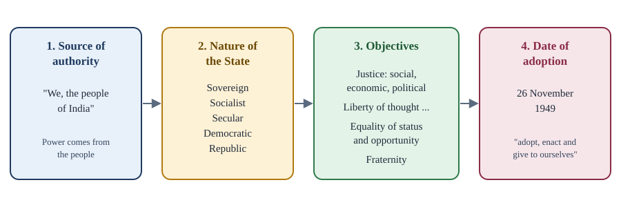

Chapter 2: The Preamble, the Union and Citizenship¶
The ideals of the Constitution, the territory of India and who belongs to it
Learning outcomes
When you have finished this chapter you should be able to:
- quote the Preamble and identify its four parts;
- explain each key word of the Preamble and the words added in 1976;
- state how the Supreme Court has answered the question whether the Preamble is part of the Constitution and whether it can be amended;
- explain Articles 1 to 4 and how new States are formed;
- describe the citizenship provisions of Part II;
- apply the rules of the Citizenship Act, 1955 on acquiring and losing citizenship to simple cases;
- explain what Overseas Citizenship of India is and what the Citizenship (Amendment) Act, 2019 provides.
2.1 The Preamble¶
A preamble is an introduction. It states the purpose of the document that follows and the spirit in which it should be read. The Preamble to the Constitution of India is short enough to quote in full. As amended in 1976, it reads:
The Preamble to the Constitution of India
WE, THE PEOPLE OF INDIA, having solemnly resolved to constitute India into a SOVEREIGN SOCIALIST SECULAR DEMOCRATIC REPUBLIC and to secure to all its citizens:
JUSTICE, social, economic and political;
LIBERTY of thought, expression, belief, faith and worship;
EQUALITY of status and of opportunity;
and to promote among them all
FRATERNITY assuring the dignity of the individual and the unity and integrity of the Nation;
IN OUR CONSTITUENT ASSEMBLY this twenty-sixth day of November, 1949, do HEREBY ADOPT, ENACT AND GIVE TO OURSELVES THIS CONSTITUTION.
Source: the Constitution of India, as amended by the Constitution (Forty-second Amendment) Act, 1976.
The Preamble is based on the Objectives Resolution moved by Jawaharlal Nehru in December 1946 (Chapter 1). It can be read as four statements, shown in Figure 2.1.

- The source of authority. "We, the people of India" says that the Constitution draws its authority from the people, not from any king, foreign parliament or assembly acting on its own account.
- The nature of the Indian State. India is to be a sovereign, socialist, secular, democratic republic.
- The objectives. Justice, liberty, equality and fraternity.
- The date of adoption. 26 November 1949.
Key idea
The Preamble tells you where the Constitution's authority comes from (the people), what kind of State it creates (a sovereign socialist secular democratic republic), what it aims at (justice, liberty, equality, fraternity) and when it was adopted (26 November 1949).
2.2 The key words of the Preamble¶
Sovereign¶
India is sovereign: it is not subject to any external authority, and it is free to conduct its own internal and external affairs. India remained a member of the Commonwealth after becoming a republic, under an arrangement agreed in 1949 by which the British monarch is recognised only as a symbol of the free association of its members. This membership is voluntary and does not limit India's sovereignty.
Socialist¶
The word socialist was added by the 42nd Amendment (1976), although many Directive Principles already pointed in that direction. Indian socialism is usually described as democratic socialism: the aim of reducing inequality of income, status and opportunity is to be pursued by democratic means, in a mixed economy where public and private sectors coexist. It does not mean the abolition of private property. Economic policy has changed a great deal since 1991, towards a larger role for markets, but the word remains in the Preamble as a statement of the goal of social and economic justice.
Secular¶
Secular was also added in 1976. The Indian idea of secularism is not a wall between religion and the State. It means that the State has no religion of its own, treats all religions with equal respect, does not discriminate on grounds of religion, and guarantees freedom of religion to all, subject to public order, morality and health. The State may, however, regulate secular activities connected with religion and carry out social reform (Article 25(2)). The Supreme Court held in S. R. Bommai v. Union of India (1994) that secularism is part of the basic structure of the Constitution.
Democratic¶
Democratic means that the government draws its authority from the will of the people, expressed through periodic elections held on universal adult franchise. India is a representative democracy, in which the people elect representatives who make laws and hold the executive to account. The Preamble's wider objectives show that the framers meant more than political democracy: they wanted social and economic democracy as well.
Republic¶
A republic is a State whose head is elected rather than hereditary. India's head of State, the President, is elected indirectly for a fixed term of five years. The word also means that all public offices are open to every citizen without discrimination, and that there is no privileged class.
Justice, liberty, equality, fraternity¶
- Justice in three forms. Social justice means equal treatment of all citizens without distinctions based on caste, religion, sex or race, and the removal of disadvantages. Economic justice means that differences of wealth and income should not become unjust. Political justice means equal political rights: the vote, access to office and a voice in government.
- Liberty of thought, expression, belief, faith and worship. Liberty does not mean licence: the Fundamental Rights that give it effect are subject to reasonable restrictions.
- Equality of status and of opportunity: no special privileges for any section, and equal chances for all. Articles 14 to 18 put this into practice.
- Fraternity, a sense of common brotherhood, assuring two things: the dignity of the individual and the unity and integrity of the Nation. The word "integrity" was added by the 42nd Amendment.
The 42nd Amendment and the Preamble
The Preamble has been amended only once, by the 42nd Amendment (1976), which added three words: socialist, secular and integrity. The date of adoption in the last paragraph was not changed.
2.3 The Preamble's legal status¶
Two questions about the Preamble have come before the Supreme Court.
Is the Preamble a part of the Constitution? In the Berubari Union reference (1960), the Court said that the Preamble shows the general purposes of the framers and is a key to their minds, but that it is not part of the Constitution. In Kesavananda Bharati v. State of Kerala (1973), a larger bench took the opposite view: the Preamble is part of the Constitution, and it is of great importance in interpreting the rest of the text. The Court repeated this in LIC of India v. Consumer Education and Research Centre (1995).
Can the Preamble be amended? Since it is part of the Constitution, Kesavananda Bharati held that it can be amended under Article 368, but, like every other part, only so far as the amendment does not destroy the basic structure. The 42nd Amendment's additions have not been held to violate the basic structure.
Two further points are settled.
- The Preamble is not a source of power for the legislature, nor a limit on its power. A law cannot be challenged only on the ground that it conflicts with the Preamble.
- The Preamble is not enforceable in a court. It is used to interpret articles that are ambiguous: where words can bear two meanings, the one more consistent with the Preamble is preferred.
Common confusion
Students often write that the Preamble "is not part of the Constitution". That was the view in Berubari (1960), and it was overruled by Kesavananda Bharati (1973). The present position is that the Preamble is part of the Constitution, can be amended subject to the basic structure, and is not enforceable on its own.
2.4 The Union and its territory¶
Part I of the Constitution (Articles 1 to 4) deals with the territory of India.
Article 1: a Union of States¶
Article 1(1) begins: "India, that is Bharat, shall be a Union of States." Dr Ambedkar explained the choice of words in the Constituent Assembly. The Indian federation was not the result of an agreement among States, as the American one was, and no State has the right to secede. The Union is indestructible; the States, whose boundaries can be changed by Parliament, are not.
Under Article 1(3), the territory of India comprises the territories of the States, the Union Territories specified in the First Schedule, and such other territories as may be acquired. "Territory of India" is thus wider than "Union of States", which covers the States only.
Articles 2 and 3: new States and changes to existing ones¶
- Article 2 allows Parliament, by law, to admit into the Union, or establish, new States on such terms and conditions as it thinks fit. It refers to territories that were not part of India. Sikkim, which became a State in 1975 by the 36th Amendment, is the main example.
- Article 3 allows Parliament, by law, to form a new State by separating territory from a State or by uniting States or parts of States, to increase or diminish the area of any State, and to alter the boundaries or name of any State.
Article 3 lays down a procedure. A bill under it can be introduced in Parliament only on the recommendation of the President. Before recommending it, the President must refer the bill to the legislature of the affected State for its views within a period the President specifies. Parliament is not bound by those views: it may go ahead even if the State legislature objects.
Article 4: not an amendment¶
Article 4 says that laws made under Articles 2 and 3 are not amendments of the Constitution for the purposes of Article 368, even though they change the First and Fourth Schedules. They are passed by a simple majority, like ordinary laws. This is one of the clearest unitary features of the Constitution: Parliament can redraw the map of the States without their consent.
Ceding territory is different
Article 3 lets Parliament diminish the area of a State, but not hand Indian territory to a foreign country. In the Berubari Union reference (1960) the Supreme Court held that cession of territory needs a constitutional amendment under Article 368. The 9th Amendment (1960) was passed for Berubari, and the 100th Amendment (2015) gave effect to the land boundary agreement with Bangladesh, under which enclaves were exchanged. Settling a boundary dispute, as distinct from ceding territory, does not need an amendment.
How the map changed¶
At the commencement of the Constitution, the States were grouped into four categories (Part A, B, C and D). The demand for States based on language grew quickly. After a popular movement, Andhra State was formed in 1953 for Telugu speakers. The government then appointed the States Reorganisation Commission (1953) under Fazl Ali. On its report, the States Reorganisation Act, 1956, together with the 7th Amendment, abolished the four categories and created 14 States and 6 Union Territories, largely along linguistic lines.
| Year | Change |
|---|---|
| 1960 | Bombay State divided into Maharashtra and Gujarat |
| 1963 | Nagaland |
| 1966 | Punjab reorganised; Haryana formed; Chandigarh a Union Territory |
| 1971 | Himachal Pradesh becomes a State |
| 1972 | Manipur, Tripura and Meghalaya become States |
| 1975 | Sikkim becomes a State (36th Amendment) |
| 1987 | Mizoram, Arunachal Pradesh and Goa become States |
| 2000 | Chhattisgarh, Uttarakhand (then Uttaranchal) and Jharkhand |
| 2014 | Telangana formed from Andhra Pradesh |
| 2019 | State of Jammu and Kashmir reorganised into the Union Territories of Jammu and Kashmir and of Ladakh |
| 2020 | Dadra and Nagar Haveli and Daman and Diu merged into one Union Territory |
Table 2.1. Main changes to the States and Union Territories since 1956.
At the time of writing there are 28 States and 8 Union Territories. The Union Territories are the Andaman and Nicobar Islands, Chandigarh, Dadra and Nagar Haveli and Daman and Diu, Delhi (the National Capital Territory), Jammu and Kashmir, Ladakh, Lakshadweep, and Puducherry.
Worked example 2.1: Forming a new State
Situation. A region within a large State demands a State of its own. The State's legislature passes a resolution opposing the division. Can Parliament create the new State, and how?
Answer. Yes. Under Article 3, a bill to form the new State is introduced in Parliament on the recommendation of the President. Before recommending it, the President refers it to the State legislature for its views within a fixed time. The legislature's opposition must be heard but does not bind Parliament. The bill is passed by a simple majority in each House, and by Article 4 it is not treated as a constitutional amendment, though it will amend the First Schedule (the list of States) and the Fourth Schedule (seats in the Rajya Sabha). This is how Telangana was created in 2014.
2.5 Citizenship under the Constitution¶
A citizen is a full member of the State, with all civil and political rights. An alien is a citizen of another country. Some rights in the Constitution belong to citizens only:
- the Fundamental Rights in Articles 15, 16, 19, 29 and 30;
- the right to vote in elections to the Lok Sabha and State Legislative Assemblies (Article 326);
- the right to be a member of Parliament or of a State legislature;
- eligibility for certain offices: President, Vice-President, judge of the Supreme Court or a High Court, Governor, Attorney General, Comptroller and Auditor-General, and Advocate General.
India has a single citizenship. A person is a citizen of India, not of a State; all citizens enjoy the same rights wherever they live in the country (subject to special provisions for some regions).
Part II: citizenship at the commencement¶
Part II (Articles 5 to 11) does not set out a full law of citizenship. It only says who were citizens on 26 January 1950, and leaves everything else to Parliament.
| Article | Who it covers |
|---|---|
| 5 | Persons domiciled in India at the commencement who were born in India, or either of whose parents was born in India, or who had been ordinarily resident in India for at least five years |
| 6 | Persons who migrated to India from Pakistan, if they or a parent or grandparent were born in undivided India; those who came before 19 July 1948 became citizens if ordinarily resident since, those who came later had to be registered |
| 7 | Persons who migrated from India to Pakistan after 1 March 1947 were not citizens, unless they returned under a permit for resettlement |
| 8 | Persons of Indian origin living abroad could be registered as citizens by Indian diplomatic or consular representatives |
| 9 | A person who voluntarily acquired the citizenship of a foreign State was not a citizen |
| 10 | Every citizen continues to be a citizen, subject to any law made by Parliament |
| 11 | Parliament has the power to make any provision on the acquisition and termination of citizenship |
Table 2.2. Articles 5 to 11.
Under Article 11, Parliament enacted the Citizenship Act, 1955, which is the main source of citizenship law today. It has been amended several times, notably in 1986, 1992, 2003, 2005, 2015 and 2019.
Citizenship provisions came first
Articles 5 to 9 came into force on 26 November 1949, the day the Constitution was adopted, not on 26 January 1950. It was necessary to know who the citizens were before the new system started.
2.6 Acquiring and losing citizenship¶
Five ways of acquiring citizenship¶
The Citizenship Act, 1955 provides five ways.
1. By birth. The rule depends on the date of birth, because Parliament has tightened it twice.
| Born in India | Citizen by birth if... |
|---|---|
| On or after 26 January 1950 and before 1 July 1987 | always, whatever the nationality of the parents |
| On or after 1 July 1987 and before 3 December 2004 | either parent was a citizen of India at the time of birth |
| On or after 3 December 2004 | both parents are citizens, or one parent is a citizen and the other is not an illegal migrant at the time of birth |
Table 2.3. Citizenship by birth under Section 3 of the Citizenship Act, 1955.
Children of foreign diplomats posted in India and of enemy aliens born in occupied territory do not acquire citizenship by birth.
2. By descent. A person born outside India may be a citizen by descent if a parent was an Indian citizen at the time of birth. (For births before 10 December 1992 only the father's citizenship counted; for births since then, either parent's does.) Since 2004, the birth must be registered at an Indian consulate, normally within one year.
3. By registration. Certain persons may apply to be registered as citizens: for example, persons of Indian origin who have been ordinarily resident in India for seven years, persons married to citizens of India who have been ordinarily resident for seven years, and minor children of citizens. Illegal migrants cannot be registered.
4. By naturalisation. A foreigner who is not an illegal migrant may be granted a certificate of naturalisation if he or she has lived in India for twelve months immediately before applying and for eleven years in all during the fourteen years before that, is of good character, knows a language of the Eighth Schedule and intends to live in India. The person must renounce his or her previous citizenship. The government may waive conditions for a person who has rendered distinguished service to science, philosophy, art, literature, world peace or human progress.
5. By incorporation of territory. When a foreign territory becomes part of India, the Government of India specifies by order which persons of that territory become citizens. This was done, for example, when Goa, Daman and Diu, and Puducherry became part of India.
Worked example 2.2: Citizenship by birth
Decide whether each person is a citizen of India by birth.
- A child born in Kolkata in March 1985 to two parents who are citizens of Nepal living in India legally (neither is a diplomat).
- A child born in Pune in May 1995 to the same kind of parents.
- A child born in Chennai in 2012 to a father who is a citizen of India and a mother who is a German citizen living in India on a valid visa.
- A child born in Delhi in 2012 to a father who is a citizen of India and a mother who entered India without valid documents.
Answers.
- Yes. Born before 1 July 1987: birth in India is enough.
- No. Born between 1 July 1987 and 3 December 2004: at least one parent must have been a citizen. Neither was. (The child may still acquire citizenship later by another route.)
- Yes. Born after 3 December 2004: one parent is a citizen and the other, being in India on a valid visa, is not an illegal migrant.
- No, not by birth. One parent is a citizen, but the other is an illegal migrant at the time of birth. (The child may be eligible for citizenship by registration as the minor child of a citizen.)
Three ways of losing citizenship¶
- Renunciation. A citizen of full age and capacity who is also a citizen of another country may renounce Indian citizenship by declaration. Minor children of that person also cease to be citizens, but may resume citizenship within a year of turning eighteen.
- Termination. A citizen who voluntarily acquires the citizenship of another country ceases to be an Indian citizen automatically. India does not allow dual citizenship.
- Deprivation. The Central Government may, by order, deprive a person of citizenship acquired by registration or naturalisation (not by birth) on grounds such as fraud in obtaining it, disloyalty to the Constitution, unlawful dealings with an enemy during war, or certain prison sentences or long residence abroad within a few years of acquiring it.
Key idea
Citizenship at the commencement is in the Constitution (Articles 5 to 9); everything after that is in the Citizenship Act, 1955, made under Article 11. Acquisition: birth, descent, registration, naturalisation, incorporation of territory. Loss: renunciation, termination, deprivation.
2.7 Overseas citizens and recent changes¶
Overseas Citizenship of India¶
Many people of Indian origin have taken the citizenship of other countries, and so lost Indian citizenship. To keep their connection with India, Parliament created the status of Overseas Citizen of India (OCI), introduced in 2005. In 2015 the older Person of Indian Origin (PIO) card scheme was merged into it. Broadly, a foreign citizen who was, or whose parent, grandparent or great-grandparent was, a citizen of India (or eligible to become one in 1950), and the foreign spouse of a citizen or OCI cardholder in certain cases, may be registered as an OCI cardholder. Persons who are or were citizens of Pakistan or Bangladesh, or whose ancestors were, are excluded.
OCI is not dual citizenship. An OCI cardholder receives a lifelong visa and may live and work in India, but does not have the right to vote, to be elected, to hold constitutional offices or, as a rule, to buy agricultural land.
The Citizenship (Amendment) Act, 2019¶
The Citizenship (Amendment) Act, 2019 provides that persons belonging to the Hindu, Sikh, Buddhist, Jain, Parsi or Christian communities from Afghanistan, Bangladesh or Pakistan who entered India on or before 31 December 2014 are not to be treated as illegal migrants, and it reduces the residence period for their naturalisation from eleven years to five. Tribal areas of Assam, Meghalaya, Mizoram and Tripura covered by the Sixth Schedule, and areas under the Inner Line Permit system, are excluded. The rules under the Act were notified in March 2024.
The Act has been strongly debated. Its supporters describe it as a humanitarian measure for religious minorities facing persecution in neighbouring countries. Its critics argue that classification by religion is inconsistent with equality before the law (Article 14) and with secularism. Petitions challenging its validity were filed in the Supreme Court; check the current position before relying on any statement about them.
Assam and Section 6A
Section 6A of the Citizenship Act, inserted in 1985 after the Assam Accord, contains special rules for persons who came to Assam from what is now Bangladesh before 25 March 1971. On 17 October 2024 a five-judge Constitution Bench of the Supreme Court upheld its validity by a majority of four to one.
Summary
- The Preamble states the source of the Constitution's authority (the people), the nature of the State (sovereign, socialist, secular, democratic republic), its objectives (justice, liberty, equality, fraternity) and the date of adoption (26 November 1949).
- "Socialist", "secular" and "integrity" were added by the 42nd Amendment (1976), the only amendment of the Preamble.
- The Preamble is part of the Constitution (Kesavananda Bharati, 1973, overruling Berubari, 1960); it can be amended subject to the basic structure; it is neither a source of power nor enforceable in court, but it guides interpretation.
- India is a Union of States (Article 1). Parliament can form new States and change boundaries and names by ordinary law under Article 3, after hearing the views of the State legislature; such laws are not amendments (Article 4). Ceding territory needs an amendment.
- Part II deals only with citizenship at the commencement; the Citizenship Act, 1955 governs the rest: acquisition by birth, descent, registration, naturalisation and incorporation of territory, and loss by renunciation, termination and deprivation.
- India has single citizenship and no dual citizenship; OCI is a status for foreign citizens of Indian origin, not citizenship.
2.8 Exercises¶
Exercise 1
Which three words were added to the Preamble in 1976, and by which amendment?
Answer
Socialist, secular and integrity, by the 42nd Amendment (1976).
Exercise 2
In about 80 words, explain the meaning of "secular" in the Indian Constitution, and how it differs from a strict separation of State and religion.
Answer
Indian secularism means that the State has no religion of its own, treats all religions with equal respect, does not discriminate on the ground of religion, and protects every person's freedom of conscience and religion. It is not a strict wall of separation: the State may regulate secular activities associated with religion, carry out social reform, and give aid to educational institutions run by religious groups on equal terms. The emphasis is on equal treatment and principled distance rather than total non-involvement.
Exercise 3
A student says, "Parliament needs the consent of a State legislature before changing that State's boundaries." Correct the statement.
Answer
Under Article 3, the President must refer the bill to the State legislature for its views, but Parliament is not bound by those views. Consent is not required. The bill is introduced on the President's recommendation and passed by a simple majority; under Article 4 it is not a constitutional amendment.
Exercise 4
Why did the Berubari case need a constitutional amendment, when Parliament can alter the boundaries of States by ordinary law?
Answer
Article 3 allows Parliament to redraw boundaries among the States of India, but transferring Indian territory to a foreign country (cession) is not covered by it. The Supreme Court held in the Berubari Union reference (1960) that cession requires an amendment under Article 368; hence the 9th Amendment (1960).
Exercise 5
A child is born in India in 2008. Her mother is a citizen of India; her father is a citizen of Sri Lanka who is living in India on a valid work visa. Is she a citizen by birth? Give the rule.
Answer
Yes. For births on or after 3 December 2004, a child born in India is a citizen by birth if both parents are citizens, or if one parent is a citizen and the other is not an illegal migrant at the time of birth. The father is lawfully in India, so he is not an illegal migrant.
Exercise 6
List three rights or privileges that an Indian citizen has and an OCI cardholder does not.
Answer
Any three of: the right to vote; the right to be elected to Parliament or a State legislature; eligibility for constitutional offices such as President, Vice-President or judge of the Supreme Court; and, as a rule, the right to buy agricultural land. (The Fundamental Rights reserved for citizens, such as those in Article 19, are also not available to OCI cardholders, who are foreign citizens.)
2.9 Quiz¶
Check yourself: Preamble, Union and citizenship
Exercise 1
Which case held that the Preamble is part of the Constitution?
- Berubari Union (1960)
- Golaknath (1967)
- Kesavananda Bharati (1973)
- Minerva Mills (1980)
Answer
Kesavananda Bharati (1973)
Exercise 2
How many times has the Preamble been amended?
- Never
- Once
- Twice
- Three times
Answer
Once
Only by the 42nd Amendment (1976).
Exercise 3
Article 1 says: India, that is Bharat, shall be a ___ of States.
Answer
Union
Exercise 4
A bill to form a new State can be introduced in Parliament only on the recommendation of whom?
- The Prime Minister
- The President
- The Speaker
- The State Governor
Answer
The President
Exercise 5
A person born in India in 1980 to two foreign parents (not diplomats) is...
- a citizen by birth
- not a citizen by birth
- a citizen only if registered
- an OCI cardholder
Answer
a citizen by birth
For births before 1 July 1987, birth in India was enough.
Exercise 6
Which of these is NOT a way of losing Indian citizenship under the Citizenship Act, 1955?
- Renunciation
- Termination
- Deprivation
- Residence in another State of India
Answer
Residence in another State of India
Exercise 7
Match each Preamble word with its meaning.
| A | B |
|---|---|
| Sovereign | No State religion |
| Republic | Common brotherhood |
| Secular | Free from external control |
| Fraternity | Elected head of State |
Answer
Sovereign — Free from external control; Republic — Elected head of State; Secular — No State religion; Fraternity — Common brotherhood